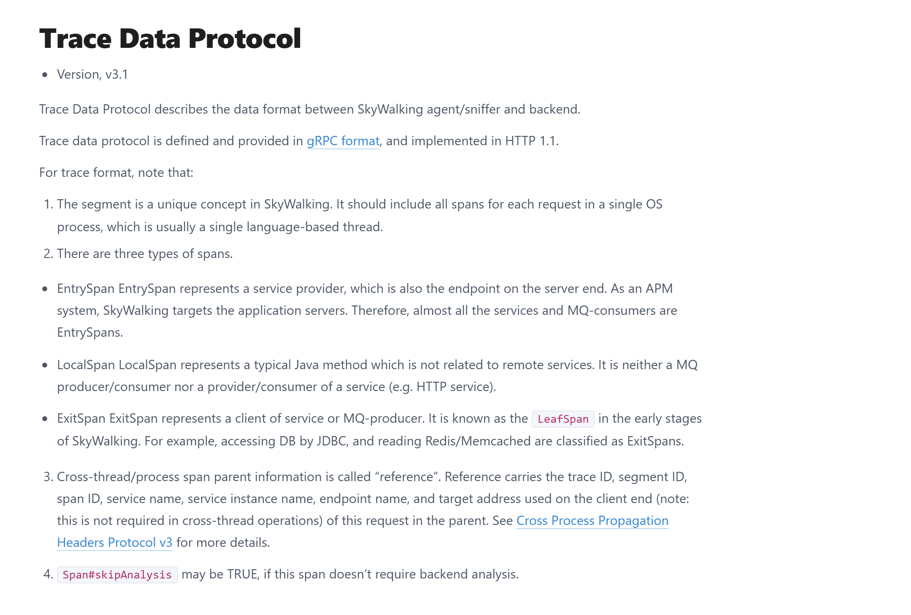
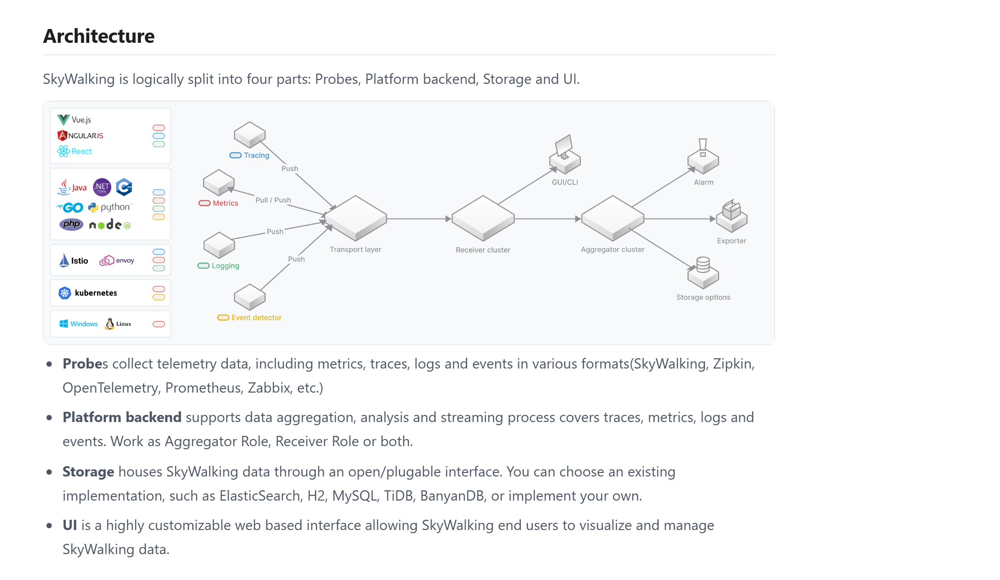
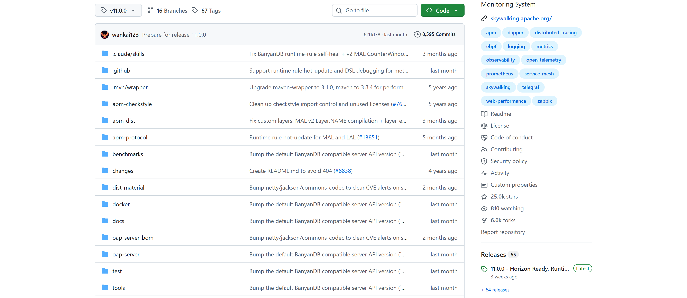
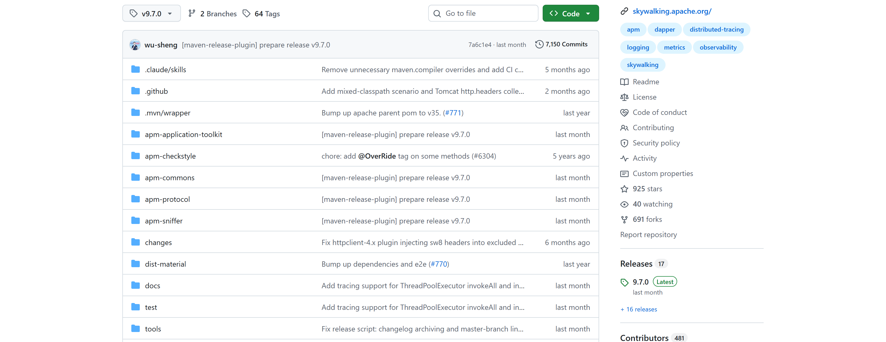

OSS PROJECT INTRO · SKYWALKING 系列第 3 期：核心概念与整体架构
上一期我们一条命令起了全家、挂上 agent，亲眼看见了第一条跨服务调用链。但 Trace 列表、Span 瀑布、拓扑图上的边，后台都发生了什么？本期你带走一张概念地图：一条请求的调用链是怎么被切分（Trace→Segment→Span）、跨进程传递（sw8 协议）、聚合成拓扑与指标（OAP 流式聚合）的，外加一张自绘整体架构图和两座源码仓库的顶层模块地图。全部概念逐条核对官方文档（2026-09 核对），引用什么核什么。
上一期跑通之后，你在界面上见到三样东西：Trace 列表里的一条记录、点开后的 Span 瀑布图、Topology 页上的服务拓扑。当时我们说"第 3 期拆原理"，现在兑现。本期回答三个问题，也是这张概念地图的三个坐标：
三问答完，再往两头各补一块：告警与存储（OAP 的规则评估和插拔式存储），以及源码仓库的顶层模块地图（主仓库 apache/skywalking 与独立成仓的 apache/skywalking-java）。第 4 期实战和第 5 期源码导读，都踩在这张地图上走。
先看本期最核心的三层模型。权威出处是官方《Trace Data Protocol v3.1》——agent 和后端之间传的就是这个格式：
# 官方《Trace Data Protocol》v3.1 · SegmentObject（节选）
message SegmentObject {
string traceId = 1; // A string id represents the whole trace.
string traceSegmentId = 2; // A unique id represents this segment.
repeated SpanObject spans = 3;
string service = 4; // Shows as a separate node in the topology.
string serviceInstance = 5; // Like `pods` in Kubernetes.
}traceId 串起来——就是上期瀑布图顶上那个编号；
官方《Trace Data Protocol v3.1》开篇：segment 是 SkyWalking 独有概念，应包含单个 OS 进程内一次请求的全部 span；Entry/Local/Exit 三类 Span 定义；跨线程/进程的父子信息叫 reference（2026-09-19 截图，正文主栏）。三类 Span 各管一段路（同样出自该文档原文）：
| 类型 | 官方定义 | 典型场景 |
|---|---|---|
| EntrySpan 入口 | 服务提供者的端点（server end 的 endpoint） | HTTP 服务入口、消息消费者——"almost all the services and MQ-consumers" |
| LocalSpan 内部 | 与远程服务无关的普通方法调用 | 进程内部业务方法、工具函数 |
| ExitSpan 出口 | 服务的客户端、消息生产者 | JDBC 访问数据库、读写 Redis/Memcached、向外发出的 HTTP 调用 |
回看上期那条瀑布就对上了：demo-app 顶部是 EntrySpan（/hello 入口），它调 demo-api 的那一步是 ExitSpan（向外发出的 HTTP 客户端调用），demo-api 侧又是一个 EntrySpan（/api 入口）。一次跨进程调用，两端各记一种 Span——这个"各记"，就是下一节切段的原因。
直接答案：因为进程有边界。请求从 demo-app 跨到 demo-api，是两个 JVM、两份内存，谁也没法在同一个数据结构里记下对方的事，所以每个进程各自记一段、各自上报。进程内的异步任务、跨线程调用同理——线程边界上也断开成新段（协议里 reference 分 CrossProcess 与 CrossThread 两种类型）。
切完的段怎么拼回一条链？靠上下文传播。官方协议叫《Cross Process Propagation Headers Protocol v3》，简称 sw8 协议：
# 官方文档原文格式：Header 名 sw8，值 = 8 个字段以 - 分隔，BASE64 编码
sw8: 1-TRACEID-SEGMENTID-3-PARENT_SERVICE-PARENT_INSTANCE-PARENT_ENDPOINT-IPPORT
# 8 字段依次：采样标记 / traceId / 父 SegmentId / 父 SpanId
# / 父服务 / 父实例 / 父端点 / 客户端访问的目标地址流程是：demo-app 的 agent 在发出 HTTP 调用的那一刻（ExitSpan 处），把八个字段塞进请求头；demo-api 的 agent 收到请求先解析这个头，于是它产生的 Segment 天然挂到正确的父 Span 下面。注入和解析都是 agent 自动做的，应用代码一行不改——上期瀑布能连成一棵树、拓扑能出现一条有向边，底层靠的就是这枚头的"一注一解"。这枚头还带一个采样标记字段：上游说这段不用采样，下游可以跟着省掉上报，这是它比常见追踪头"复杂"的原因——官方原话，复杂是为了 OAP 的分析性能。
第二个反直觉的点：你在服务面板看到的响应时间、成功率、每分钟调用数，没有任何一个是被"采集"上来的。agent 上报的只有 Span 明细；OAP 收到 Segment 的当下，就在流式管道里把它们折算成服务、服务实例、端点三级实体的指标。官方给这套规则起了个名字：OAL（Observability Analysis Language，可观测分析语言），原话是"analyzes incoming data in streaming mode"。看三行 v11.0.0 的官方原版脚本（oap-server/server-starter/src/main/resources/oal/core.oal 第 20-22 行）：
service_resp_time = from(Service.latency).longAvg(); // 响应时间：延迟求平均
service_sla = from(Service.*).percent(status == true); // 成功率：成功状态占比
service_cpm = from(Service.*).cpm(); // 每分钟调用数：计数上期服务面板上的每张 KPI 卡片，都对应这里的一行。更关键的是文档里另一句：拓扑/依赖关系不需要写任何脚本，由 OAP 内核自动从调用明细构建——Span 里天然带着"谁调了谁"，聚合引擎把 RPC 调用折算成服务间的输入/输出流量，边就算出来了。这就是"拓扑图是算出来的"的完整含义。
和 Prometheus 的分工一句话说清：Prometheus 是 Pull 模型，上门抓原始样本，先存后算，查询时现场聚合（详见 Prometheus 系列第 3 期）；SkyWalking 是 Push 模型，agent 推调用明细，后端收到即流式聚合。一个存样本后算账，一个收明细即算账——所以 SkyWalking 同一份明细既能看逐笔瀑布，又有聚合面板，还能互相跳转；而纯指标系统里，调用关系根本不在样本里。
告警是指标之上的一层薄规则。官方《Alerting》文档对告警内核的定义只有一句："in-memory, time-window based queue"——内存里基于时间窗的队列。规则写在 alarm-settings.yml 里，v11 的表达式用 MQE（指标查询表达式）语法：
# 官方《Alerting》v11.0.0 示例（节选）
rules:
service_resp_time_rule:
expression: sum(service_resp_time > baseline(service_resp_time, upper)) > 3
period: 10 # 最近 10 分钟窗口
webhook: # 触发后 HTTP POST JSON 通知
default:
is-default: true
urls:
- http://ip:port/xxx这条官方示例的含义：响应时间超过 AI 基线、10 分钟窗口内超过 3 次就告警。规则读的正是 OAL 算出来的指标（service_resp_time）；触发后进入静默期（同一条告警一个周期内最多一条），条件转好还要经过恢复观察期才发恢复通知。通知走 hooks：除了 webhook，还内置 Slack、PagerDuty 等类型——OAP 自带告警闭环，不依赖外部告警组件，对接企业内部机器人就是填一行 URL 的事。
存储是插拔式的。官方《Backend storage》文档原话"storage is pluggable"，配置里一行 selector 切换，v11 默认自研的 BanyanDB（native APM database，官方对标口径：2 联络 + 2 数据节点、各 4C8G，可稳住约 200 服务、每秒 200+ 调用）；中等规模可选 MySQL/PostgreSQL，更大规模走 Elasticsearch/OpenSearch。换存储不动分析逻辑——聚合、拓扑、告警照常工作。第 2 期快速启动选的 BanyanDB 单容器，就是这条默认链路。
架构的权威口径，官方《Overview · Architecture》一页说尽："SkyWalking is logically split into four parts: Probes, Platform backend, Storage and UI."探针采集（Java agent 只是探针之一，Zipkin/OTel/Istio 数据也在收），后端聚合分析（可作 Receiver、Aggregator 或两者兼做），存储可插拔，UI 可视化。官方原图还画出后端的集群形态：数据经传输层进接收集群，聚合集群加工后分四路出去——查询、告警、导出、落存储。

官方《Concepts and Designs · Overview》Architecture 节：四段论原文 + 官方架构原图（数据源 → Transport layer → Receiver cluster → Aggregator cluster → GUI/CLI · Alarm · Exporter · Storage options）（2026-09-19 截图，正文主栏）。把本期全部概念拼成一条请求的旅程（自绘图，与官方四段论逐框对应）：
架构要落到代码才踏实。SkyWalking 的源码分两座仓库：主仓库 apache/skywalking 放后端（下图为 tag v11.0.0 顶层实拍，标签选择器与最新提交 6f1fd78 可与 Releases 页互相印证）：

apache/skywalking @ v11.0.0 顶层：oap-server 是主角；右栏 25.0k stars · Releases 65 · 11.0.0（Latest）。注意顶层没有 UI 目录——UI 已独立出主仓库（2026-09-19 截图，UTC）。oap-server/ @ v11.0.0 · OAP 后端全家
├─ server-core/ 聚合内核：流式分析与指标生成
├─ server-receiver-plugin/ 收数插件：trace/meter/log/otel/zipkin/mesh…
├─ server-storage-plugin/ 存储适配：BanyanDB / ES / JDBC 系列
├─ server-alarm-plugin/ 告警引擎（时间窗规则评估）
├─ server-query-plugin/ 查询协议：GraphQL / PromQL / TraceQL / LogQL
├─ oal-rt/ + oal-grammar/ OAL 编译器：脚本动态生成 Java 代码
├─ mqe-rt/ + mqe-grammar/ 指标查询表达式引擎（告警表达式跑在这）
├─ analyzer/ agent/mesh 明细分析器
├─ exporter/ 指标导出（官方架构图第四路输出）
└─ 顶层另有 apm-protocol/ apm-dist/ docs/ docker/ 协议·打包·文档·compose上一页自绘架构图的每个框，在这里都有对应目录：收数在 receiver、算账在 core 与 oal-rt、出门在 query 与 alarm。第 5 期读码，就从收数和聚合这两个目录进。
挂在你应用里的那个 agent，源码不在主仓库。它独立成 apache/skywalking-java 仓库、自己发版本——所以"OAP v11.0.0 + agent v9.7.0"两个号对不上是常态，第 2 期强调过别配对：

apache/skywalking-java @ v9.7.0 顶层：apm-sniffer 装着字节码内核与 130+ 框架插件；最新提交 7a6c1e4 正是 v9.7.0 的发布准备；右栏 Releases 17 · 9.7.0（Latest）（2026-09-19 截图，UTC）。skywalking-java @ v9.7.0 · agent 独立仓库
├─ apm-sniffer/ agent 本体（-javaagent 那个 jar 从这构建）
│ ├─ apm-agent-core/ 字节码增强内核（ByteBuddy 织入）
│ ├─ apm-sdk-plugin/ 框架插件：tomcat/spring/dubbo/mysql/redis…
│ ├─ bootstrap-plugins/ 引导插件：JDK 内置类增强
│ └─ optional-plugins/ 可选插件（想用拷进 plugins 目录）
├─ apm-application-toolkit/ 手动埋点工具包：@Trace / 跨线程 / 日志绑定
├─ apm-commons/ apm-datacarrier：上报前的内存缓冲队列
├─ apm-protocol/ agent 与 OAP 的通信协议
└─ docs/ test/ tools/ 文档源 / 插件兼容测试 / 工具两个补注：其一，apm-sdk-plugin 下每个子目录就是一个框架插件——第 2 期说"plugins 目录即生效清单"，出处就在这；其二，UI 也不在主仓库顶层：现役 Booster UI 在独立的 apache/skywalking-booster-ui 仓库，v11 起快速启动默认拉的是新一代 Horizon UI 镜像（apache/skywalking-ui:horizon-1.0.0）。第 2 期解压出的 agent 目录，就是这套 skywalking-java 源码的构建产物——读码路线预告：从内核进，往插件出，第 5 期按这条线走。
先把"记全链"这个方案的隐含代价翻出来：第一个进程要记下整条链，就必须知道后续每个服务内部发生了什么、耗时多少、成不成功——这些信息只存在于下游进程的内存里。要让上游记全，要么下游把明细回传给上游（链路反着再走一遍，流量翻倍、上游还要攒着等），要么请求携带巨型上下文沿途接力（头部膨胀，和 sw8 头"长度小于 2k"的克制设计背道而驰）。更致命的是异步场景根本走不通：MQ 削峰之后，生产者和消费者可能隔了几秒、甚至不在同一台机器上先后执行，"上游记全链"在时间上就不成立。
切段方案的聪明之处在于把"记录"这件事彻底本地化：每个进程只记自己内存里发生的事（Segment），记完立刻上报，不依赖任何下游回传；跨进程的父子关系压缩成 sw8 头里的几个编号随请求捎带，异步场景用 reference 补上——记录成本与链路长度无关，链多长都不加重任何单个进程的负担。代价是 OAP 要多做一层"拼接"：靠 traceId 归链、靠 reference 挂父子。这正符合"端侧越轻越好、重活留给后端"的 APM 设计哲学——agent 挂在业务进程里，多一分重就多一分影响业务的风险。顺带一提，切段还带来一个免费好处：某个进程上报失败，丢的只是它那一段，链的其他段照样可查。
算法的原料就藏在 Span 三兄弟里：一个 ExitSpan（demo-app 调 demo-api）和一个下游的 EntrySpan（demo-api 收 /api），天然构成一次"谁、从哪个方法、调了谁、花了多久、成没成功"。OAL 文档原话是把 RPC 相关的 Span"converted to service input/output traffic"——OAP 把每个跨进程调用对折算成源服务 → 目标服务的一条调用记录，流式聚合后按时间窗累积，就得到边上的调用量、错误率、平均延迟；上游 sw8 头里的父服务名负责把两端对齐，纯本地方法（LocalSpan）不产生边，消息队列这类"时间上解耦"的调用靠 reference 里的目标地址与 sw8-x 扩展头里的发送时间戳补齐关系。注意官方特意说这一步"built by the SkyWalking OAP kernel automatically"——不写脚本，内核内置。
Prometheus 为什么做不到？回头看它的数据模型：样本 = 指标名 + 标签 + 值 + 时间戳。标签是采集端自己贴的平面维度，里面没有"这次调用是哪次调用、父调用是谁"的结构化语义——两个服务各自的 http_requests_total 曲线再漂亮，也无法证明"是 A 调了 B"。要做拓扑，得靠额外的调用关系指标（如客户端主动上报 dependency 类指标）或者干脆引入追踪。这也是"指标看症状、链路看路径"这句话的机制根源：路径信息不在样本里，只在明细里。两条技术路线没有高下——Prometheus 用最便宜的样本换来海量目标的规模，SkyWalking 用更重的明细换来开箱即得的拓扑与逐笔下钻，选型时按"要不要调用关系"来分。
带走这张概念地图：
下期预告：第 4 期《实战场景》——概念地图有了，下一期我们动手做一个端到端的链路追踪实战：一个带数据库与跨服务调用的真实小系统，从接入配置到在 UI 里完成一次"指标发现异常 → 链路定位到跳"的完整排障。
Primary source：SkyWalking 官方文档 · Concepts and Designs · Overview（v11.0.0）——本期四段论架构与数据类型均出自该页（与所用版本匹配）；Trace/Segment/Span 模型见 Trace Data Protocol v3.1，sw8 传播见 Cross Process Propagation Headers Protocol v3，OAL 见 Analysis Native Streaming Traces，告警与存储见 Alerting 与 Backend storage。
1. 按官方定义，一个 Segment 的边界是？
2. demo-app 里"向外调用 demo-api"的那一步，记录它的 Span 类型是？
3. sw8 请求头解决的问题是什么？
4. 拓扑图上 demo-app 指向 demo-api 的那条边，是怎么来的？